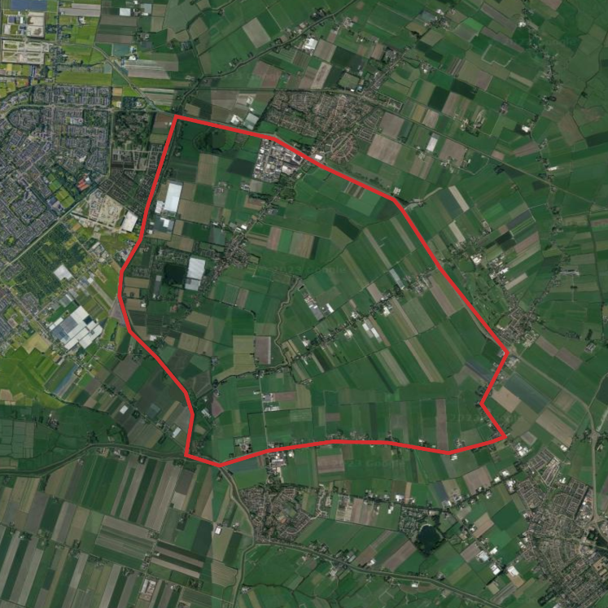

> Home
> Routes in de buurt
Hardlooproutes 2-4km (easy)
Route 1: Waarderhout
Geschikt voor: Beginners
Afstand: 3500 meter
Gemiddelde tijd: 25 minuten
Nachtlopen: Deels slecht
Verkeer: Goed

Route 2: Bomenwijk
Geschikt voor: Beginners
Afstand: 2700 meter
Gemiddelde tijd: 20 minuten
Nachtlopen: Geschikt
Verkeer: Goed

Hardlooproutes: medium (4-8km)
Route 3: Platteland
Geschikt voor: Ervaren hardlopers
Afstand: 7500 meter
Gemiddelde tijd: 50 minuten
Nachtlopen: Geschikt
Verkeer: Goed

Hardlooproutes: advanced (8-16km)
Route 4: Polder
Geschikt voor: Geavanceerde hardlopers
Afstand: 15.500 meter
Gemiddelde tijd: 1uur, 40 minuten
Nachtlopen: Deels slecht
Verkeer: Goed

 Contact
Contact